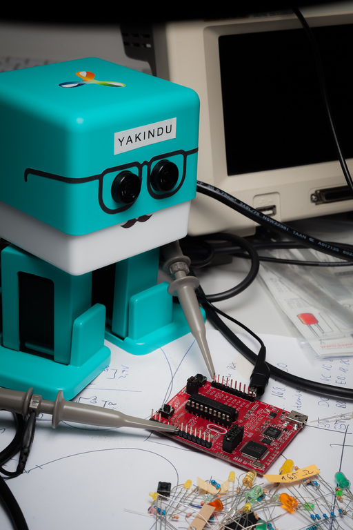
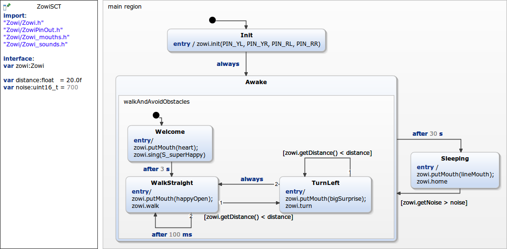

This is a example for the C++ integration of YAKINDU statechart tools. The code can be used on the Zowi roboter developed by BQ. 
The statechart is quiet simple. Zowi is awake for 30 s and walking forward. Zowi will avoid Obstacles if he founds them and turns left. He can return from sleeping mode if any noise occurs.
Within the definition section a zowi variable is declared, which is referenced by the Zowi class. With this, it is possible to use the Zowi class within the statechart.
The required Zowi projects were added to the Zowi folder. Additionally, C++ timer were added to the src folder.
For compiling and flashing the Eclipse C++ IDE for Arduino was used. Installing instructions and further informations can be found here(https://marketplace.eclipse.org/content/eclipse-c-ide-arduino). Additonally, ensure that you got an Arduino IDE installed
The plugin can easily be added over Help->Install New Software.. Therefore, the current update site is needed (Oxygen: http://download.eclipse.org/tools/cdt/releases/9.3)
It's necessary to install an Arduino IDE and download the required libararies:
... and your project should be ready to build.